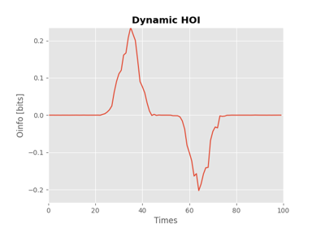
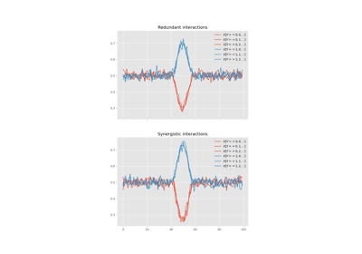
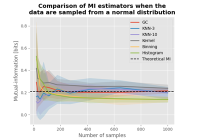
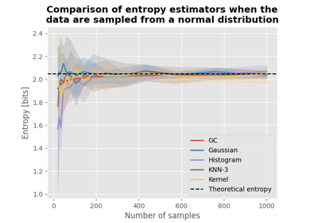
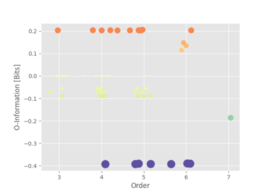
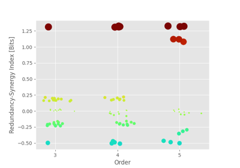

Examples#
Illustration of the main functions.
Tutorials#

How to simulate redundancy and synergy
How to simulate redundancy and synergy

Machine-learning vs. Information theoretic approaches for HOI
Machine-learning vs. Information theoretic approaches for HOI
Entropy and mutual information#

Introduction to core information theoretical metrics
Introduction to core information theoretical metrics

Comparison of mutual-information estimators
Comparison of mutual-information estimators

Comparison of entropy estimators for a multivariate normal
Comparison of entropy estimators for a multivariate normal

Comparison of entropy estimators for various distributions
Comparison of entropy estimators for various distributions

Comparison of entropy estimators with high-dimensional data
Comparison of entropy estimators with high-dimensional data

Comparison of MI estimators with high-dimensional data
Comparison of MI estimators with high-dimensional data
Metrics of HOI#

Topological Information : conditioning on orders
Topological Information : conditioning on orders

Redundancy-Synergy Index


O-information and its derivatives for network behavior and encoding
O-information and its derivatives for network behavior and encoding
Statistics : bootstrapping and permutations#

Miscellaneous#

Quick introduction to jax